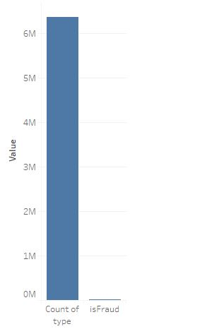
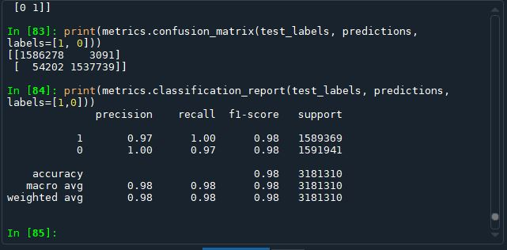
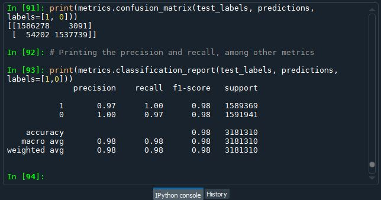

1. Trend of Frauds over 24 hours of the Day
Bank Transactions Dashboard (Please refresh if charts not proper)
2. Customers with Transaction Activities > 10000000
3. Top 10 Customers with Highest Closing Balance
4 .Type of Transactions with Share Percentage
5 .Relation between Customer to Customer and Customer to Merchant Transactions
Visualization Explanations
1. Trends of Fraud over 24 hour of a day.
It was found that the lowest number of fraud happened at 19hrs in the last one month.
I was think like if this syetem gets populated with real time data we can have a llok at real time trend of frauds.
2. Top Customers with highest transaction activities.
From 2rd bar gharph we see the customers with the transaction activities this data can be helpful in campaigns (only if ethical).
3. Top Customers with highest closing balance.
From 3rd bar gharph we see the customes with the highest closing balacnce this data can be helpful in campaigns (only if ethical).
4. Type of Transaction with share percentage .
This graph shows the percentage share of eah transaction category.We see that the highest transaction of money is from the transfer category at 42%
5. Relation between Customer to Customer and Customer to Merchant Transactions.
We see that the Customer to Customer transactions are way much higher than the Customer to Merchant Transactions.
Data mining Algorithms
I used Naive Bayes and Decision tree for the predictions
The steps are as follows:
Data cleaning and cleansing
I did the Chi-square test for feature selection and found that some of the fields were independent of the class field.

Then after removing all the independent fileds the next step was of up sampling as the Dataset is heavily unbalanced
I wanted to try SMOTE sampling but due to time constraints was not ale to try it.

Finally I ran the Decision Tree and Gaussian Naive Bayes
Here are the outpute:

Decision tree Classification Report:

Gaussian_Naive_bayes Classification Report:

Issues with Dataset and My Assumptions
The Dataset is Unbalanced
There are nearly 8400 records for isFraud category when comparision with 6 million no Fraud category
The is flagged Column is empty
I believe that as the flagged filed is empty it houlds no value for the prediction or any visualization graphs
Assumptions and suggestions
Below are the Assumption I made:
1. The steps denote every hour hence we can calculate the 24 hour cycle and then after group by on 24 hour cycle. we can get a monthly statistics of every hour.
2. I considere the "C" as Customer generated Transaction and "M" as Merchant generated transactions
3. I wanted to try hyper parameter tuning by changing the entropy to gini Index and also changing the depth of the tree but due to time constraint was not able to do it.
4. Also I wanted to work with Tableau but as it was not specified I can use any tool hence I stuck to native charts library.
5. For case 2 I assumend the requirement was count of New customers and count of Lost customer
6. In case 2 I assumed that in case of data for prior year as we dont have data for year before 2015. I have represented it as "0".
Case 2 (Please select any of the year filter and refresh if charts not proper)
1. Please select a filter from the drop box above...